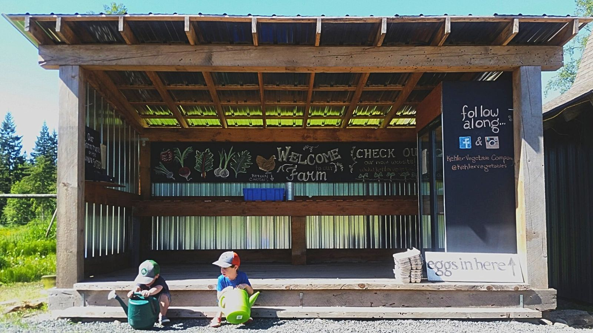
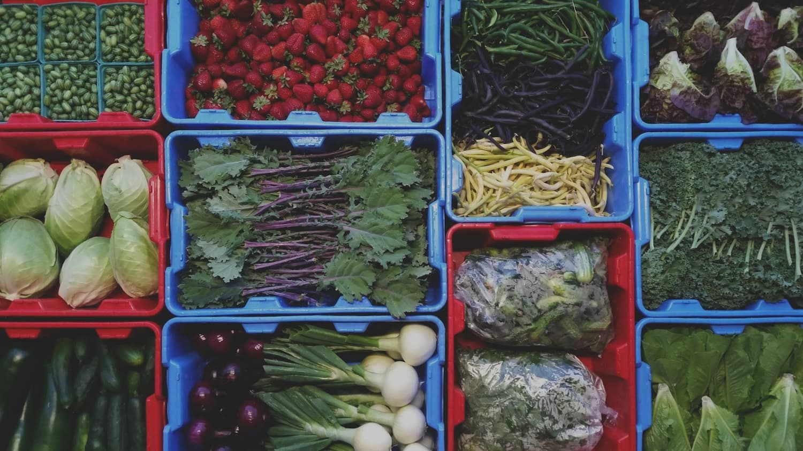

kehler vegetable company
i'm so glad you stopped by!
browse our selectionAbout Us
Welcome to Kehler Vegetable Company! We are a family-owned, small mixed market farm. Nestled in the heart of Black Creek, our farm sits on 20-acres in the scenic Comox Valley. We are committed to growing high-quality, seasonal produce that nourishes both our neighbours and the land we care for. We take great pride in growing fresh, nutrient-dense produce, all while using sustainable farming practices that support the health of the ecosystem. We proudly provide fresh vegetables, berries, and eggs from our pasture. Passionate about supporting our community, we're committed to offering the best local produce. Whether you’re here to pick up seasonal vegetables, fresh berries, or our pasture-raised eggs, we’re excited to share what we grow with you!
To see what's in season and browse our current selection, click below to explore our farmstand offerings!
browse our selectionhow to shop with us
Our farmstand is located right at the farm gate and is open seasonally for your convenience. We operate on the honour system, making it easy to shop and support local agriculture. Simply stop by, browse our selection, and leave payment in the collection box. We are open Wednesday through Friday from 10 a.m. to 5 p.m., and Saturday from 9 a.m. to noon. For those seeking larger quantities, we also offer wholesale orders. Please reach out to us for more details about this option.
Thank you for supporting Kehler Vegetable Company and for being a part of our story. We’re excited to continue growing and sharing fresh, local food with you!
To see what's in season and browse our current selection, click below to explore our farmstand offerings!
browse our selection community and events
At Kehler Vegetable Company, we believe that farming is about more than just growing food— it's about building connections, supporting sustainability, and nurturing a healthier, more vibrant community. That's why we actively participate in local events and host gatherings at our farm that celebrate not only the bounty of the land, but also the values that matter most to us: sustainability, minimalism, and living in harmony with nature. Throughout the year, we host a variety of events designed to bring people together around healthy living and local agriculture. From hands-on workshops about growing your own vegetables and creating sustainable gardens, to cooking classes focused on plant-based recipes using fresh, seasonal ingredients, our events aim to inspire and empower our community to make mindful choices about the food they eat and how they live.
join us!
We’d love for you to be part of our next community event! Keep an eye on our upcoming calendar, and be sure to follow us on social media for updates on workshops, farm tours, and community initiatives. Together, we can create a more sustainable, healthy, and connected future.
upcoming events 